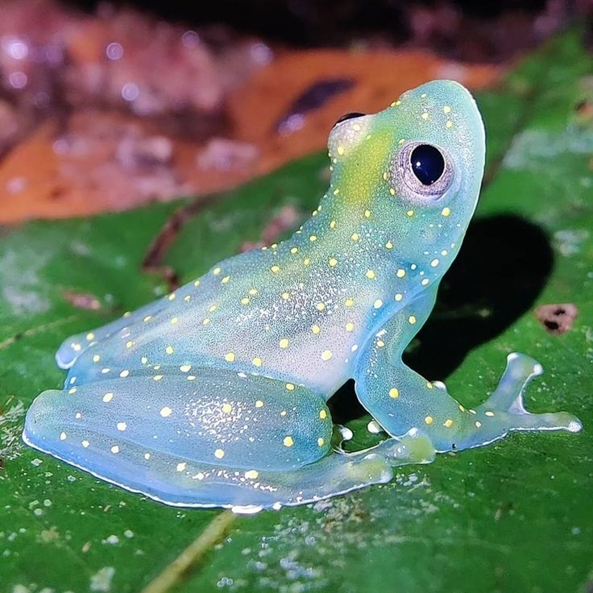
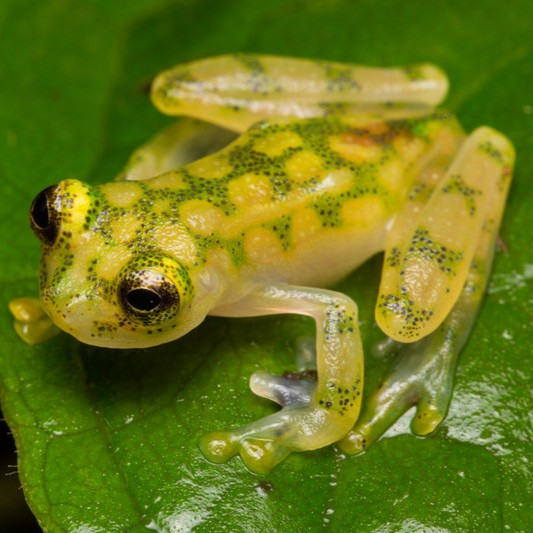
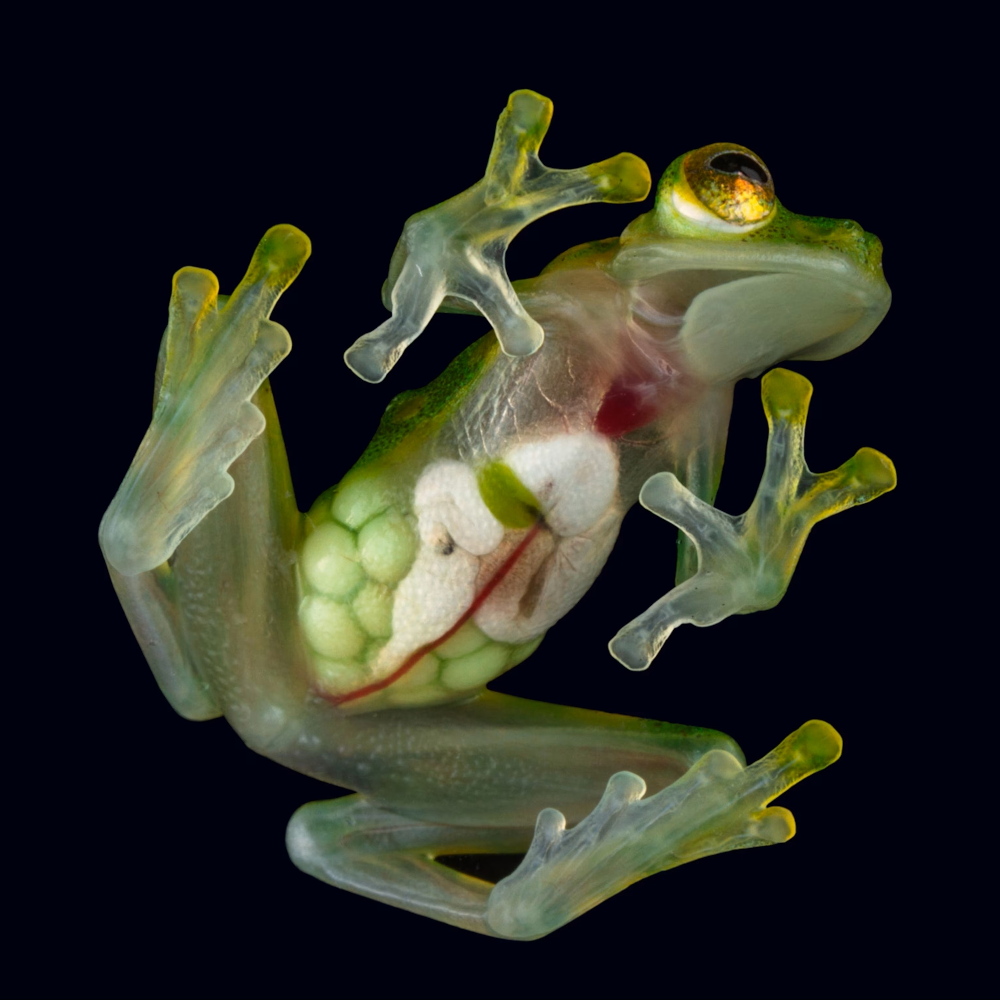
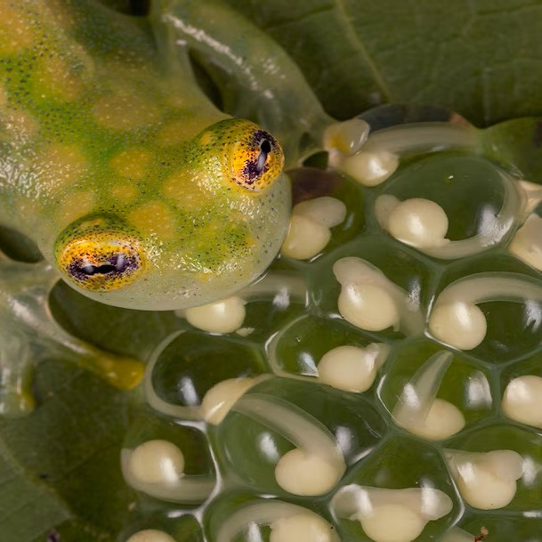
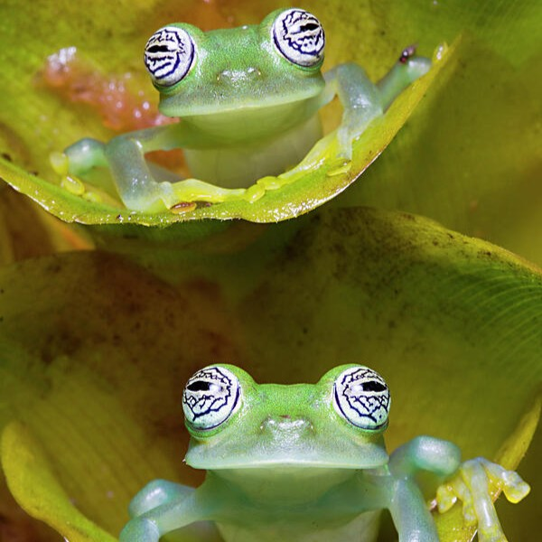
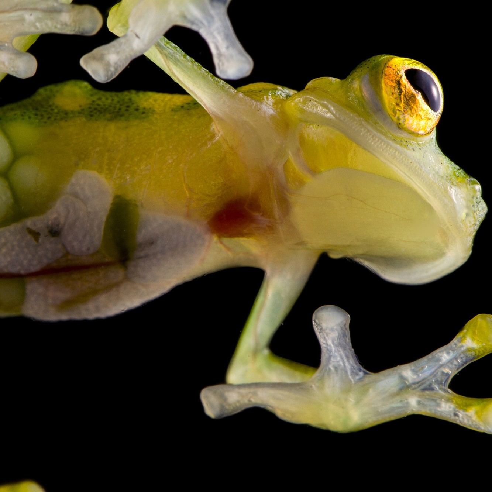
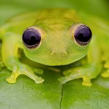

𝔾𝕝𝕒𝕤𝕤 𝔽𝕣𝕠𝕘𝕤
Full transparency about glass frogs.
Glass frogs are a group of approximately 160 species that appear translucent. When looking at the glass frog's belly, the inside of its body is visible, allowing clear view of its beating heart and food passing through its digestive system. This adaptation enables glass frogs to blend into their environment, making it difficult for predators to catch them. Unfortunately, about half of all the glass frog species are considered threatened to some degree, with some listed as critically endangered.
| Species Name | Image |
|---|---|
| San Jose Cochran frog (Cochranella euknemos)Length: 0.98-1.3 inches |  |
| Reticulated glass frog (Hyalinobatrachium valerioi)Length: 0.7-1.0 inches |  |
| Northern glass frog (Hyalinobatrachium fleischmanni )Length: 0.75-1.5 inches |  |
The tissue transparency displayed by glass frogs is extremely rare on land. Not only is the skin of these frogs transparent, but so are their muscles. Glass frogs can make themselves transparent because they can remove almost ninety percent of their red blood cells from circulation, storing them in their liver during rest. This camouflage is adaptive, illustrated by the fact that the creature has peak transparency when it is asleep, a vulnerable time since these frogs sleep on leaves during the day.
Nothing is conclusively known about the diet of glass frogs, but it is believed to eat...
- Flies 🪰
- Spiders 🕷️
- Crickets 🦗
- Moths 🦋
- Sometimes smaller frogs 🐸
- Other small invertebrates 🐛

|  |  |  |  |
Glass frogs are arboreal, meaning they live in trees. They are found in rainforests and mountainous forests across Central and South America. During the dry season, they spend their time high in the canopy. These frogs act as predators, prey, and bioindicators, living organisms that indicate the health of an ecosystem. Their threatened status is especially disheartening because of their importance in their ecosystems. Be aware of the exotic pet trade, habitat loss, and climate change, which threaten all species of glass frogs. Consider donating to dependable international wildlife organizations to protect glass frogs and other wildlife.
Source links:
National Institute of Biomedical Imaging and Bioengineering
⠀⠀⠀⠀⠀⠀⠀⠀⠀⠀⠀⠀⠀⠀⠀⠀⠀⠀⠀⠀⣀⣀⠀⠀⠀⠀⠀⠀⠀⠀⠀⠀⠀⠀⠀⠀⠀⠀⠀⠀⠀ ⠀⠀⠀⠀⠀⠀⠀⠀⠀⠀⠀⠀⠀⢀⣤⣲⣒⠒⠍⠉⠢⠤⠤⠤⠤⠤⠤⠤⡭⠍⣒⣒⣢⣄ ⠀⠀⠀⠀⠀⠀⠀⠀⠀⠀⠀⠀⣠⡿⠛⢻⣿⣷⡀⠀⠀⠀⠀⠀⠀⠀⠀⠀⠀⠀⠀⣸⠟⠛⣿⣿⣦⠀⠀⠀⠀⠀⠀⠀⠀⠀⠀⠀⠀⠀ ⠀⠀⠀⠀⠀⠀⠀⠀⠀⠀⠀⢀⣿⣷⣴⣡⣿⣿⡇⠀⠀⠀⠀⠀⠀⠀⠀⠀⠀⠀⢀⣿⣦⣎⣼⣿⣿⠀⠀⠀⠀⠀⠀⠀⠀⠀⠀⠀⠀⠀ ⠀⠀⠀⠀⠀⠀⠀⠀⠀⠀⠀⢺⠙⢿⣿⣿⣻⠞⠃⠀⠀⠀⠀⠀⠀⠀⠀⠀⠀⠀⠐⠻⣿⣿⣿⣷⠟⡷⠀⠀⠀⠀⠀⠀⠀⠀⠀⠀⠀⠀ ⠀⠀⠀⠀⠀⠀⠀⠀⠀⠀⢀⡼⠓⠀⠉⠉⠁⠀⠀⠀⠀⠀⠀⠳⠀⠘⠀⠀⠀⠀⠀⠀⠀⠉⠉⠁⠘⢇⠀⠀⠀⠀⠀⠀⠀⠀⠀⠀⠀⠀ ⠀⠀⠀⠀⠀⠀⠀⠀⠀⠀⠸⡦⣀⡀⠀⠀⠀⠀⠀⠀⠀⠀⠀⠀⠀⠀⠀⠀⠀⠀⠀⠀⠀⠀⠀⠀⠀⣀⣧⡀⠀⠀⠀⠀⠀⠀⠀⠀⠀⠀ ⠀⠀⠀⠀⠀⠀⠀⠀⠀⠀⣠⠜⢳⡺⠵⣶⣒⠢⠤⠤⠤⠤⠤⠤⣤⣤⡤⠤⡒⡦⠤⠤⣤⣶⣶⣾⣿⡊⠁⠱⡄⠀⠀⠀⠀⠀⠀⠀⠀⠀ ⠀⠀⠀⠀⠀⠀⠀⠀⢀⠔⠁⢰⠃⢧⠀⠀⠈⠉⠛⠉⠉⠉⠉⠉⠉⠉⠉⠉⠉⣉⡭⠛⠉⠁⠀⠀⡇⢿⠀⠀⠘⣆⠀⠀⠀⠀⠀⠀⠀⠀ ⠀⠀⠀⠀⠀⠀⠀⢠⠏⠀⢠⠇⠀⢸⠀⠀⠀⠀⠀⠀⠀⠀⠀⠀⠀⠀⠀⠀⠈⠁⠀⠀⠀⠀⠀⢸⠀⠈⢧⠀⠀⢸⡀⠀⠀⠀⠀⠀⠀⠀ ⠀⠀⣠⡴⠒⠉⠉⠉⢉⡶⠚⠀⢀⠏⠀⠀⠀⠀⠀⠀⠀⠀⠀⠀⠀⠀⠀⠀⠀⠀⠀⠀⠀⠀⠀⢸⠀⠀⠀⠑⢦⡈⡧⢤⣀⡀⠀⠀⠀⠀ ⢀⡾⠁⠀⠀⢀⡴⠊⠁⠀⠀⢠⠏⠀⠀⠀⠀⠀⠀⠀⠀⠀⠀⠀⠀⠀⠀⠀⠀⠀⠀⠀⠀⠀⠀⠈⡇⠀⠀⠀⠀⠙⢧⠀⠀⠉⠑⠦⡀⠀ ⢸⠀⠀⠀⢰⠋⠀⠀⠀⠰⣄⢻⠀⠀⠀⠀⠀⠀⠀⠀⠀⠀⠀⠀⠀⠀⠀⠀⠀⠀⠀⠀⠀⠀⠀⠀⡇⢀⡠⠊⠀⠀⡜⠀⠀⠀⠀⠀⠙⡄ ⠘⡆⠀⠀⢸⡀⠀⠀⠀⠀⠈⠻⣆⠀⠀⠀⠀⠀⠀⠀⠀⠀⠀⠀⠀⠀⠀⠀⠀⠀⠀⠀⠀⠀⠀⢸⡷⠋⠀⠀⠀⢰⠁⠀⠀⠀⠀⠀⠀⢸ ⠀⠘⢦⡀⠈⢣⠀⠀⠀⠀⠀⠀⣿⣄⠀⠀⠀⠀⠀⠀⠀⠀⠀⠀⠀⠀⠀⠀⠀⠀⠀⠀⠀⠀⣠⠏⠀⠀⠀⠀⢠⠇⠀⠀⠀⠀⠀⠀⠀⣼ ⠀⠀⠀⠉⠒⠤⢳⡀⠀⠀⠀⠀⢽⡈⠣⣄⠀⠀⠀⠀⠀⠀⠀⠀⠀⠀⠀⠀⠀⠀⠀⢀⣤⡶⠁⠀⠀⠀⠀⢠⠟⠦⣄⣀⣀⣀⣀⣠⠔⠁ ⠀⠀⠀⣀⡤⠤⠴⣷⠀⠀⠀⠀⠀⣇⠀⠈⠑⠢⠤⣄⣀⣀⡀⠀⠀⢀⣀⣀⠤⠔⠚⢉⡜⠁⠀⠀⠀⠀⢠⠏⣠⡀⠐⡌⠙⢿⣉⠀⠀⠀ ⠀⠀⠀⢷⣷⣀⣴⣋⣧⠀⠀⠀⠀⠸⣲⡤⠤⣄⠀⠀⠀⠀⠀⠈⠀⣀⣀⠀⢀⣀⣠⠮⠄⠀⠀⠀⠀⢠⡯⠞⡗⠡⠤⢼⢄⣩⠼⠀⠀⠀ ⠀⠀⠀⠀⠉⠁⠘⠲⠼⢦⡀⠀⠀⠀⠀⠀⣄⠀⢉⠍⠱⠖⢲⠖⠙⢄⣀⡽⠟⠒⠒⠀⠀⠀⠀⠀⢰⠏⠀⠀⠛⠒⠒⠋⠀⠀⠀⠀⠀⠀ ⠀⠀⠀⠀⠀⠀⠀⠀⠀⠀⢹⠃⠤⢴⡆⢀⠀⠙⡧⠴⠊⠀⠀⠳⠤⠼⣇⠐⠲⡤⠤⠤⠤⠤⢤⡤⠞⠁⠀⠀⠀⠀⠀⠀⠀⠀⠀⠀⠀⠀ ⠀⠀⠀⠀⠀⠀⠀⠀⠀⠀⠈⠑⠒⠚⠈⠓⠒⠛⠁⠀⠀⠀⠀⠀⠀⠀⠉⠓⠊⠁⠀⠀⠀⠀⠀⠀⠀⠀⠀⠀⠀⠀⠀⠀⠀⠀⠀⠀⠀⠀